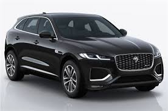

Jaguar (UK: /ˈdʒæɡjuər/, US: /ˈdʒæɡwɑːr/) is the luxury vehicle brand of Jaguar Land Rover,[1][3] a British multinational car manufacturer with its headquarters in Whitley, Coventry, England. Jaguar Cars was the company that was responsible for the production of Jaguar cars until its operations were fully merged with those of Land Rover to form Jaguar Land Rover on 1 January 2013. Jaguar's business was founded as the Swallow Sidecar Company in 1922, originally making motorcycle sidecars before developing bodies for passenger cars. Under the ownership of SS Cars, the business extended to complete cars made in association with Standard Motor Company, many bearing Jaguar as a model name. The company's name was changed from SS Cars to Jaguar Cars in 1945. A merger with the British Motor Corporation followed in 1966,[4] the resulting enlarged company now being renamed as British Motor Holdings (BMH), which in 1968 merged with Leyland Motor Corporation and became British Leyland, itself to be nationalised in 1975. Jaguar was spun off from British Leyland and was listed on the London Stock Exchange in 1984 until it was acquired by Ford in 1990.[5] Jaguar has, in recent years, manufactured cars for the Prime Minister of the United Kingdom, the most recent delivery being an XJ in May 2010.[6] The company also held a royal warrants from Queen Elizabeth II and holds one from Prince Charles.[7] Ford owned Jaguar Cars, also buying Land Rover in 2000, until 2008 when it sold both to Tata Motors. Tata created Jaguar Land Rover as a subsidiary holding company. At operating company level, in 2013 Jaguar Cars was merged with Land Rover to form Jaguar Land Rover as the single design, manufacture, sales company and brand owner for both Jaguar and Land Rover vehicles. Since the Ford ownership era, Jaguar and Land Rover have used joint design facilities in engineering centres at Whitley in Coventry and Gaydon in Warwickshire and Jaguar cars have been assembled in plants at Castle Bromwich and Solihull. On 15 February 2021, Jaguar Land Rover announced that all cars made under the Jaguar brand will be fully electric by 2025.
|  | |
|
|